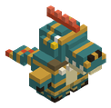
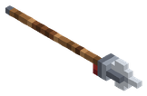
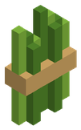
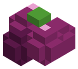
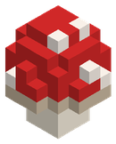

Bestiario › Facción


Variantes de color
Guerrero lagarto
Hostil Bípedo Facción Hombres lagarto Guerrero
Hombre lagarto de lanza y collar de dientes; caza en el pantano.
3Nivel
53Vida
9,5Daño
2Armadura
0,4Regeneración
3,5Velocidad
Dónde aparece
| Hordas | Hombres lagarto |
|---|
Armamento
| Arma |  Lanza |
|---|
Botín
| Objeto | Cantidad | Probabilidad |
|---|---|---|
 Fibra vegetal | 1 – 3 | 60 % |
 Bayas | 1 – 3 | 50 % |
 Seta roja | 1 | 30 % |
Archivo de datos: mods/factions/lizardfolk_warrior.json · tamaño del vóxel 0,1 m · cuerpo de 0,8 × 1,75 bloques